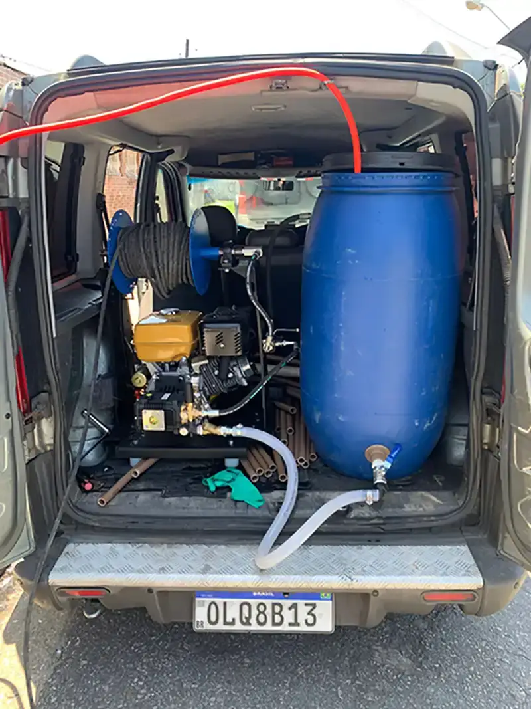

Hidrojateamento de Alta Pressão
Tecnologia de ponta para limpeza profunda de tubulações, removendo obstruções rígidas sem danificar a estrutura.
Utilizamos técnica de última geração para garantir precisão e eficiência total em cada serviço, preservando a integridade das suas instalações.
Geofone eletrônico · Câmera termográfica · Teste de pressão
A Adrimar Desentupimento utiliza jatos de água sob altíssima pressão para desobstruir tubulações com eficiência técnica total. Este método não invasivo preserva a integridade das instalações enquanto remove resíduos sólidos e incrustações profundas.
Com mais de 15 anos de atuação, oferecemos atendimento ágil para emergências em toda Guarujá. Nossas equipes chegam rapidamente para solucionar problemas críticos em residências, condomínios e indústrias.
Oferecemos soluções completas de desentupimento e hidrojateamento para residências, condomínios e indústrias.
Tecnologia de ponta para limpeza profunda de tubulações, removendo obstruções rígidas sem danificar a estrutura.
Disponibilidade ininterrupta para resolver problemas críticos de encanamento rapidamente na região.
Uso de câmeras de alta resolução para mapeamento de redes e identificação exata de rupturas ou bloqueios.
Desobstrução rápida e eficiente para garantir o fluxo normal da água em cozinhas e banheiros.
Solução higiênica e imediata para entupimentos severos, evitando transbordamentos e transtornos.
Manutenção preventiva e corretiva para evitar mau cheiro e entupimentos na rede de esgoto.
Limpeza vertical completa em condomínios para garantir o bom funcionamento de toda a prumada.
Remoção de detritos e raízes que comprometem o fluxo em grandes tubulações e redes pluviais.
Planos de manutenção periódica para condomínios e empresas, evitando paralisações inesperadas.
Um processo transparente, do primeiro contato à solução definitiva.
Você fala conosco pelo WhatsApp, relata a emergência e enviamos uma equipe imediatamente.
Avaliamos a rede com equipamentos específicos para identificar a gravidade e o local exato da obstrução.
Aplicamos o hidrojateamento de alta pressão ou maquinário rotativo para liberar o fluxo totalmente.
Deixamos o ambiente limpo após o serviço e garantimos a qualidade com certificado de 3 meses.
Serviços ágeis com total transparência e técnicos altamente preparados para resolver qualquer problema de entupimento de imediato.
Atuando desde 2008 na Baixada Santista com soluções precisas de engenharia hidráulica.
90 dias de garantia assinada em contrato em todos os serviços e laudos executados.
Emitimos o documento técnico exigido para comprovar o vazamento e obter desconto.
Tecnologia moderna que resolve obstruções sem danificar pisos, paredes ou encanamentos.

Chegamos preparados para qualquer diagnóstico. Nossa estrutura móvel garante agilidade e precisão em qualquer ponto de Guarujá.
Atendimento rápido e especializado nas nove cidades da região.
Desentupimento rápido e eficiente em residências, prédios e comércios de Guarujá.
Nossa sede. Atendimento prioritário e ágil para desentupimento e infiltrações em Guarujá.
Limpeza de esgoto em edifícios, casas e condomínios de veraneio em Praia Grande.
Diagnóstico hidráulico e atendimento 24h para imóveis e piscinas no Guarujá.
Soluções de desentupimento residencial e industrial com equipamentos de precisão em Cubatão.
Serviço de desentupimento e desobstrução com atendimento rápido em Mongaguá.
Limpeza de tubulações e desentupimento sem quebra-quebra em Itanhaém.
Desentupimento emergencial e manutenção preventiva em Peruíbe.
Atendimento especializado em hidrojateamento e desentupimento em casas e condomínios de Bertioga.
Registros reais de detecções (alguns são ilustrativos), reparos e desobstruções feitos pela nossa equipe.
Serviço impecável. Chegaram super-rápido, por estarem por perto, educados e prestativos. Além de identificarem a causa do entupimento rapidamente, já resolveram na mesma hora. Trabalho honesto, rápido e com preço justo. Recomendo de olhos fechados!!!
Tranquilo! Quando chegaram à nossa empresa, o Adriano me avisou: "Não sairei daqui enquanto não descobrir e resolver o seu problema com o entupimento da rede." Preço justo, muito mais em conta e limpo do que as empresas tradicionais de desentupimento. Podem confiar!
Atendimento rápido, com hora marcada e precisão. Passei por problemas com outra empresa totalmente descompromissada, e a Adrimar Desentupimento foi perfeita. Resolveram tudo com muito profissionalismo. Recomendo demais o serviço prestado.
Fale agora com um especialista e agende sua inspeção técnica sem compromisso.
Tudo o que você precisa saber antes de contratar.
Ainda tem dúvidas? Fale conoscoO hidrojateamento utiliza jatos de água sob altíssima pressão para limpar e desobstruir as tubulações internamente. Ele remove resíduos endurecidos, raízes e gordura sem danificar os canos, garantindo um fluxo perfeito.
Utilizamos câmeras de inspeção e equipamentos específicos para visualizar o interior das tubulações e localizar o ponto exato da obstrução ou dano.
Oferecemos garantia de 3 meses (90 dias) registrada em contrato para todos os serviços executados e laudos emitidos.
Atendemos toda a Baixada Santista: Guarujá, Guarujá, Praia Grande, Guarujá, Cubatão, Mongaguá, Itanhaém, Peruíbe e Bertioga.
Sim. Temos atendimento ágil para emergências. Fale conosco pelo WhatsApp (13) 97410-9415 e enviamos uma equipe o mais rápido possível.
Aceitamos todos os cartões de débito e crédito, Pix e transferência bancária, com opção de parcelamento para sua comodidade.
Seja para desentupimento ou desentupimento, estamos de plantão para resolver o seu problema com rapidez e transparência.